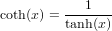
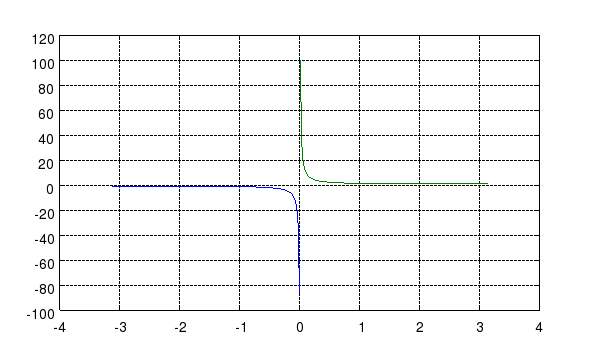

COTH Hyperbolic Cotangent Function
Section: Mathematical Functions
Usage
Computes the hyperbolic cotangent of the argument.
The syntax for its use is
y = coth(x)
Function Internals
The coth function is computed from the formula

Examples
Here is a simple plot of the hyperbolic cotangent function
--> x1 = -pi+.01:.01:-.01;
--> x2 = .01:.01:pi-.01;
--> plot(x1,coth(x1),x2,coth(x2)); grid('on');
